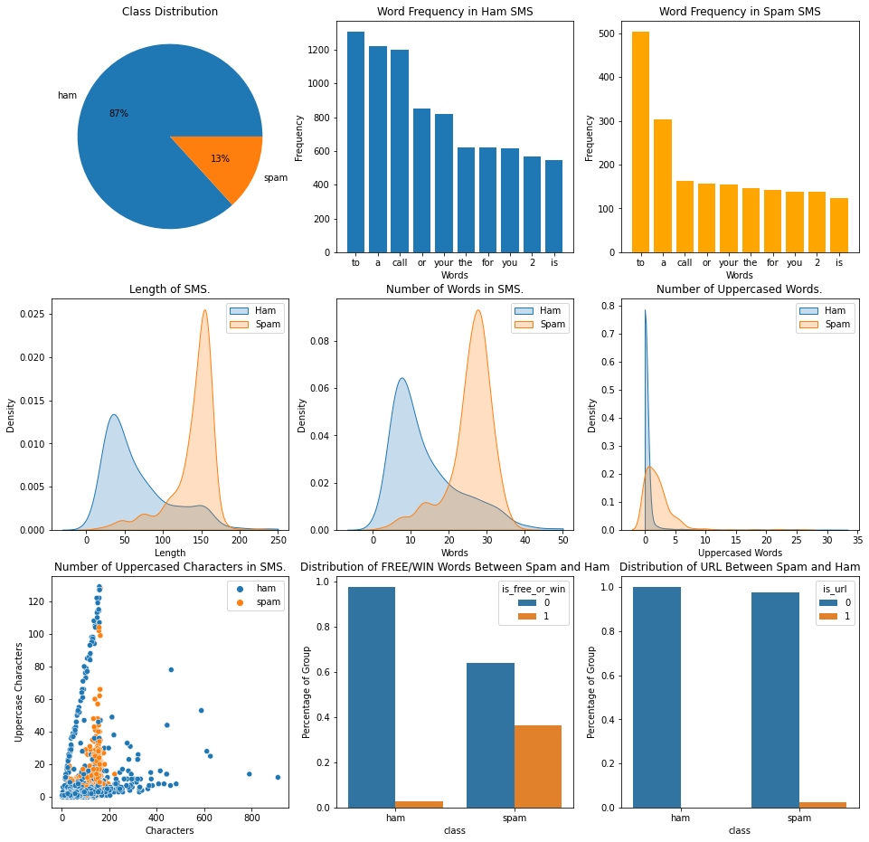
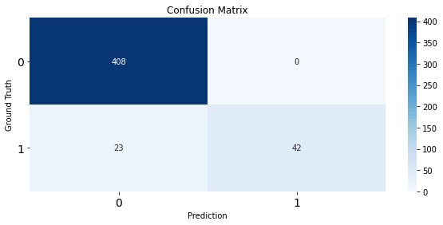
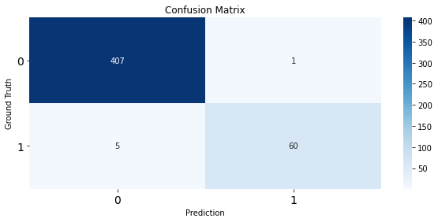
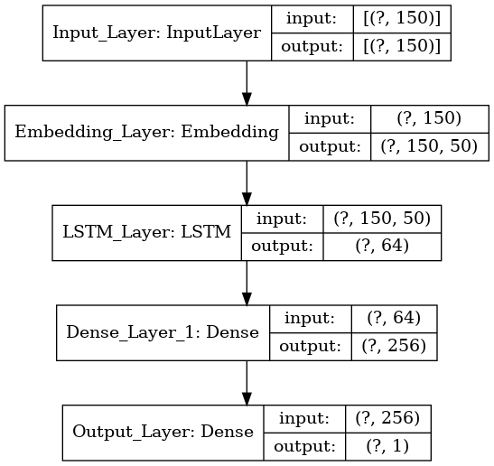
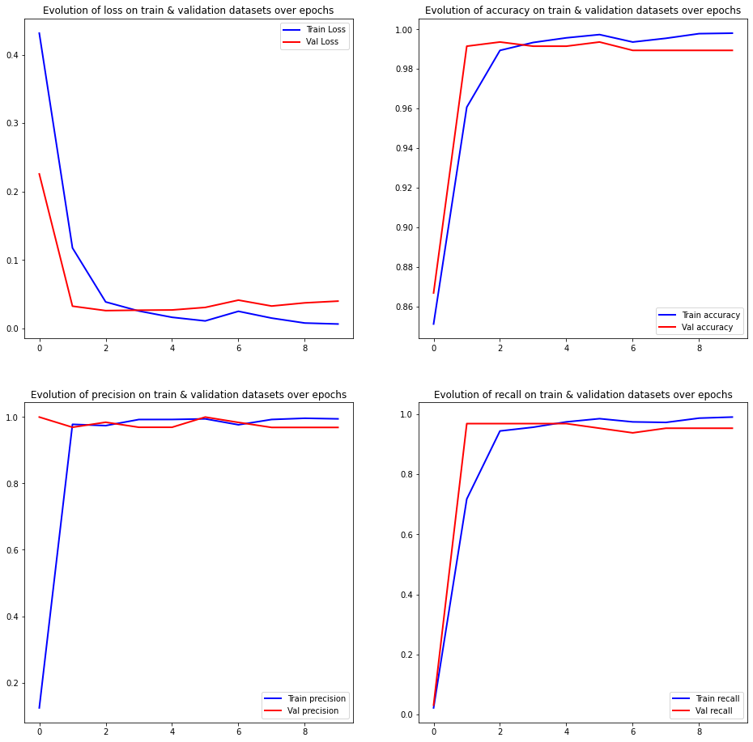

SMS Spam Detection with Machine Learning

Table of Contents
- Description
- Requirements
- Data Analysis and Feature Engineering
- Data preprocessing
- Classic ML
- LSTM
- References
1. Description
The SMS Ham-Spam detection dataset is a set of SMS tagged messages that have been collected for SMS Spam research. It contains a set of 5,574 SMS messages in English, considering both train and test data. The tagging standard was defined as ham (legitimate) or spam.
The train and test files are formatted using the standard of one message per line. Each line is composed by two columns: one with label (ham or spam) and other with the raw text. Here are some examples:
ham What you doing?how are you?
ham Ok lar... Joking wif u oni...
ham dun say so early hor... U c already then say...
ham MY NO. IN LUTON 0125698789 RING ME IF UR AROUND! H*
ham Siva is in hostel aha:-.
ham Cos i was out shopping wif darren jus now n i called him 2 ask wat present he wan lor. Then he started guessing who i was wif n he finally guessed darren lor.
spam FreeMsg: Txt: CALL to No: 86888 & claim your reward of 3 hours talk time to use from your phone now! ubscribe6GBP/ mnth inc 3hrs 16 stop?txtStop
spam Sunshine Quiz! Win a super Sony DVD recorder if you canname the capital of Australia? Text MQUIZ to 82277. B
spam URGENT! Your Mobile No 07808726822 was awarded a L2,000 Bonus Caller Prize on 02/09/03! This is our 2nd attempt to contact YOU! Call 0871-872-9758 BOX95QU
Note: messages are not chronologically sorted.
For evaluation purposes, the test dataset does not prosent the categories (ham, spam). Therefore, the train data is the full source of information for this test.
The goal of the this test is to achieve a model that can correctly manage the incoming messages on SMS format (ham or spam). Considering a real scenario, assume that a regular person does not want to see a spam message. However, they accepts if a normal message (ham) is sometimes allocated at the spam box.
2. Requirements
Assuming that you have a clean enviroment to run this jupyter notebook, create a new code block, copy and paste the following code and run it:
!pip install numpy
!pip install matplotlib
!pip install tensorflow
!pip install scikit-learn
!pip install nltk
!pip install transformers
!pip install seaborn
!pip install xgboost
#################################################################################################
import re
from collections import Counter
import time
#################################################################################################
import numpy as np
import pandas as pd
import seaborn as sns
import matplotlib.pyplot as plt
#################################################################################################
from sklearn import feature_extraction
from sklearn.feature_extraction.text import CountVectorizer, TfidfTransformer
from sklearn.metrics import accuracy_score, confusion_matrix, precision_score, recall_score
from sklearn.model_selection import train_test_split, GridSearchCV
from sklearn.pipeline import Pipeline
from transformers import TFTrainer, TFTrainingArguments
from sklearn.neighbors import KNeighborsClassifier
from sklearn.naive_bayes import MultinomialNB
from sklearn.svm import SVC
from sklearn.ensemble import AdaBoostClassifier, RandomForestClassifier
from xgboost import XGBClassifier
#################################################################################################
import nltk
from nltk import WordNetLemmatizer
from nltk.corpus import stopwords
from nltk.tokenize import word_tokenize
#################################################################################################
import tensorflow as tf
from tensorflow import keras
from tensorflow.keras import Sequential, Model, layers
from tensorflow.keras.preprocessing.text import Tokenizer
from tensorflow.keras.preprocessing import sequence
from tensorflow.keras.callbacks import EarlyStopping
#################################################################################################
gpu = len(tf.config.list_physical_devices('GPU'))>0
if gpu:
print("GPU is", "available")
physical_devices = tf.config.list_physical_devices('GPU')
tf.config.experimental.set_memory_growth(physical_devices[0], True)
else:
print("NOT AVAILABLE")
nltk.download("punkt")
nltk.download("stopwords")
nltk.download("wordnet")
3. Data Analysis and Feature Engineering
TRAIN_PATH = 'TrainingSet/sms-hamspam-train.csv'
df = pd.read_csv(TRAIN_PATH,names = ['class','text'], delimiter = '\t')
df
| class | text | |
|---|---|---|
| 0 | ham | Go until jurong point, crazy.. Available only ... |
| 1 | spam | SMSSERVICES. for yourinclusive text credits, p... |
| 2 | spam | 25p 4 alfie Moon's Children in need song on ur... |
| 3 | spam | U have a secret admirer. REVEAL who thinks U R... |
| 4 | spam | Dear Voucher Holder, To claim this weeks offer... |
| ... | ... | ... |
| 4720 | spam | This is the 2nd time we have tried 2 contact u... |
| 4721 | ham | Will ü b going to esplanade fr home? |
| 4722 | ham | Pity, * was in mood for that. So...any other s... |
| 4723 | ham | The guy did some bitching but I acted like i'd... |
| 4724 | ham | Rofl. Its true to its name |
4725 rows × 2 columns
fig, axs = plt.subplots(3, 3, figsize = (16,16))
# Class Distribution
class_value_counts = df['class'].value_counts(sort = True)
# Plot
axs[0,0].set_title("Class Distribution")
axs[0,0].pie(class_value_counts, labels = class_value_counts.index, autopct = "%1.0f%%")
axs[0,0].axis('off')
# Word Frequency
most_common_ham = pd.DataFrame.from_dict(
Counter(" ".join(df.loc[df["class"]== "ham"]["text"]).split()).most_common(10)
)
most_common_ham = most_common_ham.rename(columns={0: "word_in_ham", 1 : "frequency"})
most_common_spam = pd.DataFrame.from_dict(
Counter(" ".join(df.loc[df["class"]== "spam"]["text"]).split()).most_common(10)
)
most_common_spam = most_common_spam.rename(columns={0: "word_in_spam", 1 : "frequency"})
axs[0,1].set_title("Word Frequency in Ham SMS")
axs[0,1].bar(most_common_ham["word_in_ham"], most_common_ham["frequency"])
axs[0,1].set_xticks(np.arange(len(most_common_ham["word_in_ham"])))
axs[0,1].set_xticklabels(most_common_ham["word_in_ham"])
axs[0,1].set_xlabel("Words")
axs[0,1].set_ylabel("Frequency")
axs[0,2].set_title("Word Frequency in Spam SMS")
axs[0,2].bar(most_common_spam["word_in_spam"], most_common_spam["frequency"], color = 'orange')
axs[0,2].set_xticks(np.arange(len(most_common_spam["word_in_spam"])))
axs[0,1].set_xticklabels(most_common_spam["word_in_spam"])
axs[0,2].set_xlabel("Words")
axs[0,2].set_ylabel("Frequency")
# Length
df["message_len"] = df["text"].apply(len)
sns.kdeplot(
df.loc[df['class'] == "ham", "message_len"],
shade=True,
label="Ham",
clip=(-50, 250), ax = axs[1,0]
)
sns.kdeplot(df.loc[df['class'] == "spam", "message_len"], shade=True, label="Spam",ax = axs[1,0])
axs[1,0].set(
xlabel="Length",
ylabel="Density",
title="Length of SMS.",
)
axs[1,0].legend(loc="upper right")
# Number of Words
df["nwords"] = df["text"].apply(lambda s: len(re.findall(r"\w+", s)))
sns.kdeplot(
df.loc[df['class'] == "ham", "nwords"],
shade=True,
label="Ham",
clip=(-10, 50), ax = axs[1,1]
)
sns.kdeplot(df.loc[df['class'] == "spam", "nwords"], shade=True, label="Spam", ax = axs[1,1])
axs[1,1].set(
xlabel="Words",
ylabel="Density",
title="Number of Words in SMS.",
)
axs[1,1].legend(loc="upper right")
# Number of Uppercased Words
df["nupperwords"] = df["text"].apply(
lambda s: len(re.findall(r"\b[A-Z][A-Z]+\b", s))
)
sns.kdeplot(
df.loc[df['class'] == "ham", "nupperwords"],
shade=True,
label="Ham",
clip=(0, 35), ax = axs[1,2]
)
sns.kdeplot(df.loc[df['class'] == "spam", "nupperwords"], shade=True, label="Spam", ax = axs[1,2])
axs[1,2].set(
xlabel="Uppercased Words",
ylabel="Density",
title="Number of Uppercased Words.",
)
axs[1,2].legend(loc="upper right")
# Number of Uppercased Characters
df["nupperchars"] = df["text"].apply(
lambda s: sum(1 for c in s if c.isupper())
)
sns.scatterplot(x="message_len", y="nupperchars", hue="class", data=df, ax = axs[2,0])
axs[2,0].set(
xlabel="Characters",
ylabel="Uppercase Characters",
title="Number of Uppercased Characters in SMS.",
)
axs[2,0].legend(loc="upper right")
# Contains free or win
df["is_free_or_win"] = df["text"].apply(
lambda s: int("free" in s.lower() or "win" in s.lower())
)
grouped_data = (
df.groupby("class")["is_free_or_win"]
.value_counts(normalize=True)
.rename("Percentage of Group")
.reset_index()
)
axs[2,1].set_title("Distribution of FREE/WIN Words Between Spam and Ham")
sns.barplot(
x="class",
y="Percentage of Group",
hue="is_free_or_win",
data=grouped_data, ax = axs[2,1]
)
# Contains url
df["is_url"] = df["text"].apply(
lambda s: 1
if re.search(
r"http[s]?://(?:[a-zA-Z]|[0-9]|[$-_@.&+]|[!*\(\),]|(?:%[0-9a-fA-F][0-9a-fA-F]))+",
s,
)
else 0
)
grouped_data = (
df.groupby("class")["is_url"]
.value_counts(normalize=True)
.rename("Percentage of Group")
.reset_index()
)
axs[2,2].set_title("Distribution of URL Between Spam and Ham")
sns.barplot(
x="class",
y="Percentage of Group",
hue="is_url",
data=grouped_data, ax = axs[2,2]
)
plt.savefig('assets/data_analysis.jpg')
plt.show()

4. Data Preprocessing
df["text"] = df["text"].apply(
lambda row: re.sub(r"[^a-zA-Z]+", " ", row)
)
df["text"].head()
0 Go until jurong point crazy Available only in ...
1 SMSSERVICES for yourinclusive text credits pls...
2 p alfie Moon s Children in need song on ur mo...
3 U have a secret admirer REVEAL who thinks U R ...
4 Dear Voucher Holder To claim this weeks offer ...
Name: text, dtype: object
df["text"] = df["text"].apply(lambda row: word_tokenize(row))
df["text"].head()
0 [Go, until, jurong, point, crazy, Available, o...
1 [SMSSERVICES, for, yourinclusive, text, credit...
2 [p, alfie, Moon, s, Children, in, need, song, ...
3 [U, have, a, secret, admirer, REVEAL, who, thi...
4 [Dear, Voucher, Holder, To, claim, this, weeks...
Name: text, dtype: object
df["text"] = df["text"].apply(
lambda row: [
token for token in row if token not in set(stopwords.words("english"))
]
)
df["text"].head()
0 [Go, jurong, point, crazy, Available, bugis, n...
1 [SMSSERVICES, yourinclusive, text, credits, pl...
2 [p, alfie, Moon, Children, need, song, ur, mob...
3 [U, secret, admirer, REVEAL, thinks, U, R, So,...
4 [Dear, Voucher, Holder, To, claim, weeks, offe...
Name: text, dtype: object
df["text"] = df["text"].apply(
lambda row: " ".join([WordNetLemmatizer().lemmatize(word) for word in row])
)
df["text"].head()
0 Go jurong point crazy Available bugis n great ...
1 SMSSERVICES yourinclusive text credit pls goto...
2 p alfie Moon Children need song ur mob Tell ur...
3 U secret admirer REVEAL think U R So special C...
4 Dear Voucher Holder To claim week offer PC ple...
Name: text, dtype: object
df.loc[df['class'] == "ham", "class"] = 0
df.loc[df['class'] == "spam", "class"] = 1
df.head(10)
| class | text | message_len | nwords | nupperwords | nupperchars | is_free_or_win | is_url | |
|---|---|---|---|---|---|---|---|---|
| 0 | 0 | Go jurong point crazy Available bugis n great ... | 111 | 20 | 0 | 3 | 0 | 0 |
| 1 | 1 | SMSSERVICES yourinclusive text credit pls goto... | 156 | 24 | 3 | 24 | 0 | 0 |
| 2 | 1 | p alfie Moon Children need song ur mob Tell ur... | 161 | 32 | 0 | 7 | 0 | 0 |
| 3 | 1 | U secret admirer REVEAL think U R So special C... | 147 | 28 | 3 | 24 | 0 | 0 |
| 4 | 1 | Dear Voucher Holder To claim week offer PC ple... | 152 | 31 | 2 | 13 | 0 | 1 |
| 5 | 1 | Do want anytime network min text NEW VIDEO pho... | 149 | 28 | 2 | 9 | 0 | 0 |
| 6 | 1 | We tried contact offer New Video Phone anytime... | 155 | 28 | 2 | 15 | 0 | 0 |
| 7 | 1 | Last chance claim ur worth discount voucher Te... | 160 | 31 | 2 | 16 | 0 | 0 |
| 8 | 1 | Urgent call landline Your complimentary Ibiza ... | 153 | 28 | 3 | 18 | 0 | 0 |
| 9 | 1 | Today Offer Claim ur worth discount voucher Te... | 158 | 29 | 1 | 14 | 0 | 0 |
df['class'] = df['class'].astype(np.uint8)
df.describe()
| class | message_len | nwords | nupperwords | nupperchars | is_free_or_win | is_url | |
|---|---|---|---|---|---|---|---|
| count | 4725.000000 | 4725.000000 | 4725.000000 | 4725.000000 | 4725.000000 | 4725.000000 | 4725.000000 |
| mean | 0.132275 | 80.161270 | 16.180106 | 0.646138 | 5.679788 | 0.071111 | 0.003175 |
| std | 0.338825 | 60.559271 | 11.947438 | 2.551516 | 11.932286 | 0.257038 | 0.056260 |
| min | 0.000000 | 2.000000 | 0.000000 | 0.000000 | 0.000000 | 0.000000 | 0.000000 |
| 25% | 0.000000 | 36.000000 | 8.000000 | 0.000000 | 1.000000 | 0.000000 | 0.000000 |
| 50% | 0.000000 | 61.000000 | 12.000000 | 0.000000 | 2.000000 | 0.000000 | 0.000000 |
| 75% | 0.000000 | 121.000000 | 24.000000 | 0.000000 | 4.000000 | 0.000000 | 0.000000 |
| max | 1.000000 | 910.000000 | 190.000000 | 32.000000 | 129.000000 | 1.000000 | 1.000000 |
df.info()
<class 'pandas.core.frame.DataFrame'>
RangeIndex: 4725 entries, 0 to 4724
Data columns (total 8 columns):
# Column Non-Null Count Dtype
--- ------ -------------- -----
0 class 4725 non-null uint8
1 text 4725 non-null object
2 message_len 4725 non-null int64
3 nwords 4725 non-null int64
4 nupperwords 4725 non-null int64
5 nupperchars 4725 non-null int64
6 is_free_or_win 4725 non-null int64
7 is_url 4725 non-null int64
dtypes: int64(6), object(1), uint8(1)
memory usage: 263.1+ KB
X_train, X_val, y_train, y_val = train_test_split(
df["text"], df["class"], test_size=0.1, random_state = 0
)
print(f"Training data: {len(X_train)} (90%)")
print(f"Testing data: {len(X_val)} (10%)")
Training data: 4252 (90%)
Testing data: 473 (10%)
5. Classic ML
knn = GridSearchCV(
Pipeline(
[
("BagOfWords", CountVectorizer()),
("Tfidf", TfidfTransformer()),
("clf", KNeighborsClassifier())
]
),
{
"clf__n_neighbors": (3,5,15,25,45,55),
}
)
mnbayes = GridSearchCV(
Pipeline(
[
("BagOfWords", CountVectorizer()),
("Tfidf", TfidfTransformer()),
("clf", MultinomialNB()),
]
),
{
"clf__alpha": (0.1, 1e-2, 1e-3),
"clf__fit_prior": (True, False),
},
)
svc = GridSearchCV(
Pipeline(
[
("BagOfWords", CountVectorizer()),
("Tfidf", TfidfTransformer()),
("clf", SVC(gamma="auto", C=1000)),
]
),
{
}
)
ada = GridSearchCV(
Pipeline(
[
("BagOfWords", CountVectorizer()),
("Tfidf", TfidfTransformer()),
("clf", AdaBoostClassifier()),
]
),
{
"clf__n_estimators": [100,200],
"clf__learning_rate": [0.001, 0.01, 0.1, 0.2, 0.5]
}
)
rf = GridSearchCV(
Pipeline(
[
("BagOfWords", CountVectorizer()),
("Tfidf", TfidfTransformer()),
("clf", RandomForestClassifier()),
]
),
{
"clf__criterion" : ["gini", "entropy"],
"clf__max_depth" : [None, 1,3,5,10],
"clf__min_samples_split": [5,10],
"clf__min_samples_leaf": [5,10],
"clf__n_estimators": [100, 150, 200]
}
)
xgb = GridSearchCV(
Pipeline(
[
("BagOfWords", CountVectorizer()),
("Tfidf", TfidfTransformer()),
("clf", XGBClassifier()),
]
),
{
'clf__max_depth': [3, 4, 5],
"clf__n_estimators": [200, 500, 600]
}
)
models = {"K-Nearest Neighbors": knn,
"Multinomial Naive Bayes": mnbayes,
"Support Vector Machine": svc,
"AdaBoost": ada,
"Random Forest": rf,
"XGBoost": xgb
}
results = []
for model in models:
print("\n",model)
models[model].fit(X= X_train, y = y_train)
preds = models[model].predict(X_val)
plt.figure(figsize=(10,4))
heatmap = sns.heatmap(
data = pd.DataFrame(confusion_matrix(y_val, preds)),
annot = True,
fmt = "d",
cmap=sns.color_palette("Blues", 50),
)
heatmap.xaxis.set_ticklabels(heatmap.xaxis.get_ticklabels(), fontsize=14)
heatmap.yaxis.set_ticklabels(
heatmap.yaxis.get_ticklabels(), rotation=0, fontsize=14
)
plt.title("Confusion Matrix")
plt.ylabel("Ground Truth")
plt.xlabel("Prediction")
plt.show()
precision = precision_score(y_val, preds)
recall = recall_score(y_val, preds)
acc = accuracy_score(y_val, preds)
print(f"Precision: {precision * 100:.3f}%")
print(f" Recall: {recall * 100 :.3f}%")
print(f" Accuracy: {acc * 100:.3f}%")
results.append([model, precision, recall, acc])
K-Nearest Neighbors

Precision: 100.000%
Recall: 64.615%
Accuracy: 95.137%
Multinomial Naive Bayes
Precision: 98.387%
Recall: 93.846%
Accuracy: 98.943%
Support Vector Machine
Precision: 98.305%
Recall: 89.231%
Accuracy: 98.309%
AdaBoost

Precision: 98.361%
Recall: 92.308%
Accuracy: 98.732%
Random Forest
Precision: 98.148%
Recall: 81.538%
Accuracy: 97.252%
XGBoost
Precision: 96.610%
Recall: 87.692%
Accuracy: 97.886%
6. LSTM
max_words = 1000
max_len = 150
tok = Tokenizer(num_words=max_words)
tok.fit_on_texts(X_train)
sequences = tok.texts_to_sequences(X_train)
sequences_matrix = sequence.pad_sequences(sequences, maxlen = max_len)
sequences_val = tok.texts_to_sequences(X_val)
sequences_matrix_val = sequence.pad_sequences(sequences_val, maxlen = max_len)
def build_rnn():
input_layer = layers.Input(shape = [max_len], name='Input_Layer')
x = layers.Embedding(max_words, 50, input_length = max_len, name = "Embedding_Layer")(input_layer)
x = layers.LSTM(64, activation = 'tanh', name = "LSTM_Layer")(x)
x = layers.Dense(256, activation = 'relu', name = 'Dense_Layer_1')(x)
#x = layers.Dropout(0.5)(x)
output_layer = layers.Dense(1, activation='sigmoid',name = 'Output_Layer')(x)
rnn = Model(inputs=input_layer, outputs=output_layer)
return rnn
model = build_rnn()
model.summary()
keras.utils.plot_model(model, "assets/simple_rnn.png", show_shapes=True)
Model: "model"
_________________________________________________________________
Layer (type) Output Shape Param #
=================================================================
Input_Layer (InputLayer) [(None, 150)] 0
_________________________________________________________________
Embedding_Layer (Embedding) (None, 150, 50) 50000
_________________________________________________________________
LSTM_Layer (LSTM) (None, 64) 29440
_________________________________________________________________
Dense_Layer_1 (Dense) (None, 256) 16640
_________________________________________________________________
Output_Layer (Dense) (None, 1) 257
=================================================================
Total params: 96,337
Trainable params: 96,337
Non-trainable params: 0
_________________________________________________________________

model.compile(loss = 'binary_crossentropy', optimizer='adam',
metrics =['accuracy',keras.metrics.Precision(),keras.metrics.Recall()])
early_stopping = keras.callbacks.EarlyStopping(monitor='val_loss', min_delta=0.0001)
hist = model.fit(sequences_matrix, y_train, batch_size = 128, epochs = 10,
validation_data=(sequences_matrix_val, y_val))
epoch_loss = hist.history['loss']
epoch_val_loss = hist.history['val_loss']
epoch_acc = hist.history['accuracy']
epoch_val_acc = hist.history['val_accuracy']
epoch_precision = hist.history['precision']
epoch_val_precision = hist.history['val_precision']
epoch_recall = hist.history['recall']
epoch_val_recall = hist.history['val_recall']
fig, axs = plt.subplots(2,2, figsize = (16,16))
plt.figure(figsize=(20,6))
axs[0,0].plot(range(0,len(epoch_loss)), epoch_loss, 'b-', linewidth=2, label='Train Loss')
axs[0,0].plot(range(0,len(epoch_val_loss)), epoch_val_loss, 'r-', linewidth=2, label='Val Loss')
axs[0,0].set_title('Evolution of loss on train & validation datasets over epochs')
axs[0,0].legend(loc='best')
axs[0,1].plot(range(0,len(epoch_acc)), epoch_acc, 'b-', linewidth=2, label='Train accuracy')
axs[0,1].plot(range(0,len(epoch_val_acc)), epoch_val_acc, 'r-', linewidth=2,label='Val accuracy')
axs[0,1].set_title('Evolution of accuracy on train & validation datasets over epochs')
axs[0,1].legend(loc='best')
axs[1,0].plot(range(0,len(epoch_precision)), epoch_precision, 'b-', linewidth=2, label='Train precision')
axs[1,0].plot(range(0,len(epoch_val_precision)), epoch_val_precision, 'r-', linewidth=2, label='Val precision')
axs[1,0].set_title('Evolution of precision on train & validation datasets over epochs')
axs[1,0].legend(loc='best')
axs[1,1].plot(range(0,len(epoch_recall)), epoch_recall, 'b-', linewidth=2, label='Train recall')
axs[1,1].plot(range(0,len(epoch_val_recall)), epoch_val_recall, 'r-', linewidth=2,label='Val recall')
axs[1,1].set_title('Evolution of recall on train & validation datasets over epochs')
axs[1,1].legend(loc='best')
plt.show()

<Figure size 1440x432 with 0 Axes>
preds = model.predict(sequences_matrix_val)
preds = np.uint8(np.round(preds.T))
plt.figure(figsize=(10,4))
heatmap = sns.heatmap(
data = pd.DataFrame(confusion_matrix(y_val.values, preds[0])),
annot = True,
fmt = "d",
cmap=sns.color_palette("Blues", 50),
)
heatmap.xaxis.set_ticklabels(heatmap.xaxis.get_ticklabels(), fontsize=14)
heatmap.yaxis.set_ticklabels(
heatmap.yaxis.get_ticklabels(), rotation=0, fontsize=14
)
plt.title("Confusion Matrix")
plt.ylabel("Ground Truth")
plt.xlabel("Prediction")
plt.show()
precision = precision_score(y_val.values, preds[0])
recall = recall_score(y_val.values, preds[0])
acc = accuracy_score(y_val.values, preds[0])
print(f"Precision: {precision * 100:.3f}%")
print(f" Recall: {recall * 100 :.3f}%")
print(f" Accuracy: {acc * 100:.3f}%")
results.append(['Simple RNN', precision, recall, acc])
Precision: 96.875%
Recall: 95.385%
Accuracy: 98.943%
model.save(f'saved_models/my_model_{time.time()}.h5')
df_results = pd.DataFrame(results, columns=['Algorithm', 'Precision', 'Recall', 'Accuracy'])
df_results
| Algorithm | Precision | Recall | Accuracy | |
|---|---|---|---|---|
| 0 | K-Nearest Neighbors | 1.000000 | 0.646154 | 0.951374 |
| 1 | Multinomial Naive Bayes | 0.983871 | 0.938462 | 0.989429 |
| 2 | Support Vector Machine | 0.983051 | 0.892308 | 0.983087 |
| 3 | AdaBoost | 0.983607 | 0.923077 | 0.987315 |
| 4 | Random Forest | 0.981481 | 0.815385 | 0.972516 |
| 5 | XGBoost | 0.966102 | 0.876923 | 0.978858 |
| 6 | Simple RNN | 0.968750 | 0.953846 | 0.989429 |
Evaluating the test
TEST_PATH = 'TestSet/sms-hamspam-test.csv'
df_test = pd.read_csv(TEST_PATH,names = ['text'])
df_test
| text | |
|---|---|
| 0 | I know that my friend already told that. |
| 1 | It took Mr owl 3 licks |
| 2 | Dunno y u ask me. |
| 3 | K.k:)advance happy pongal. |
| 4 | I know but you need to get hotel now. I just g... |
| ... | ... |
| 842 | Booked ticket for pongal? |
| 843 | Yes :)it completely in out of form:)clark also... |
| 844 | Yeah sure |
| 845 | He is there. You call and meet him |
| 846 | I see a cup of coffee animation |
847 rows × 1 columns
def apply_data_preprocessing(dataframe, column):
df = dataframe.copy()
df[column] = df[column].apply(
lambda row: re.sub(r"[^a-zA-Z]+", " ", row)
)
df[column] = df[column].apply(lambda row: word_tokenize(row))
df[column] = df[column].apply(
lambda row: [
token for token in row if token not in set(stopwords.words("english"))
]
)
df[column] = df[column].apply(
lambda row: " ".join([WordNetLemmatizer().lemmatize(word) for word in row])
)
X = df[column].values
max_words = 1000
max_len = 150
tok = Tokenizer(num_words=max_words)
tok.fit_on_texts(X)
sequences = tok.texts_to_sequences(X)
sequences_matrix = sequence.pad_sequences(sequences, maxlen = max_len)
return sequences_matrix
def classify(text_csv, column, model_path):
df_test = pd.read_csv(text_csv,names = [column])
sequences_matrix = apply_data_preprocessing(df_test, column)
model = tf.keras.models.load_model(model_path)
preds = model.predict(sequences_matrix)
preds = np.uint8(np.round(preds.T))
preds = preds[0]
df_test['class'] = preds
return df_test
7. References
João Pedro Vasconcelos Teixeira
Undergraduate Researcher
My research interests include computer vision, natural language processing and machine learning